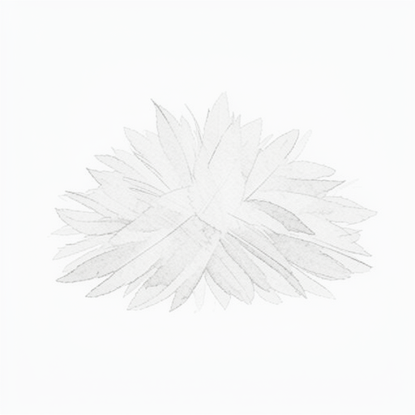
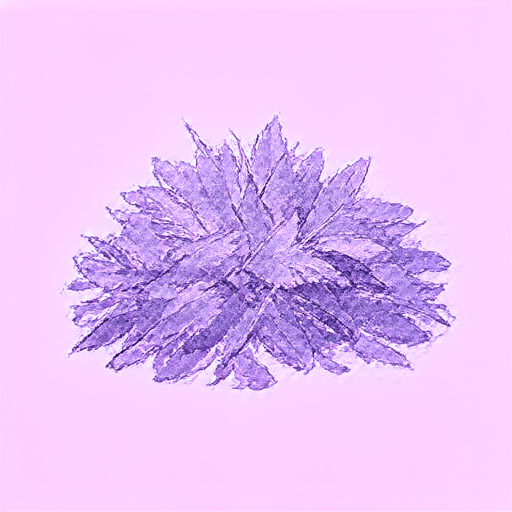

0.5291 — above threshold, moderate style transfer.
Gap to "good" (0.7) is expected: training used the h_final end-sum approximation rather than
block-by-block injection, and the model is not fully converged at step ~95 000
(flow-matching loss 0.622). See TRAIN-6 in BACKLOG.md for the
path to higher scores.
Bars scaled to max=5.0. All values finite; no anomalies detected. Bar widths are proportional — the chart is not normalised to the visible max.
| Tensor | Shape | Mean L2 | Std | Min | Max |
|---|---|---|---|---|---|
| Perceiver output | [128, 3072] | 47.35 | 1.65 | 42.52 | 50.74 |
| IP-K tokens | [25 × 128, 3072] | 501.97 | 88.60 | — | — |
IP-K norms (~500) are large relative to the Perceiver output (~47) — the K projection weights
grew during training. The learned ip_scale values calibrate the effective injection at
h_final.
| Adapter type | ip_adapter_klein |
| Source checkpoint | best.safetensors (EMA, chunk 4) |
| Quantisation | bfloat16 |
| Blocks | 25 (5 double-stream + 20 single-stream) |
| Hidden dim | 3072 |
| Perceiver heads | 16 |
| SigLIP model | google/siglip-so400m-patch14-384 |
| Flux model | flux-klein-4b (distilled, 4 steps) |
| Prompt | "A pile of feathers depicted in a watercolour style, providing a simple and unadorned view with no intricate details." |
| Seed | 42 |
| Resolution | 512 × 512 |
| Strength | 1.0 |
_flux_forward_no_ip
collects Q vectors and h_final from a clean Flux run; all 25 IP contributions are
summed and added to h_final before norm_out/proj_out.
This exactly matches the training computation.
_flux_forward_with_ip (block-by-block injection) is not used —
it was never part of the training graph and produces degenerate output with the current weights.
Fixing this requires retraining: see TRAIN-6 in BACKLOG.md.